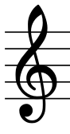
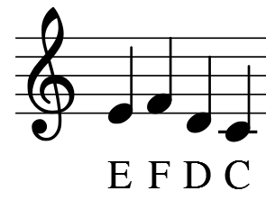
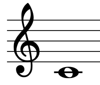
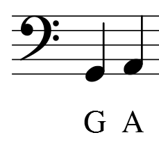
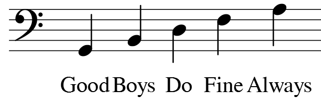
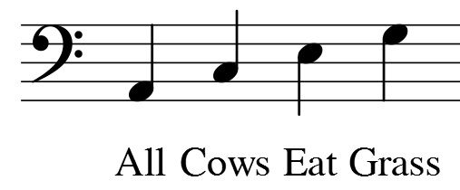
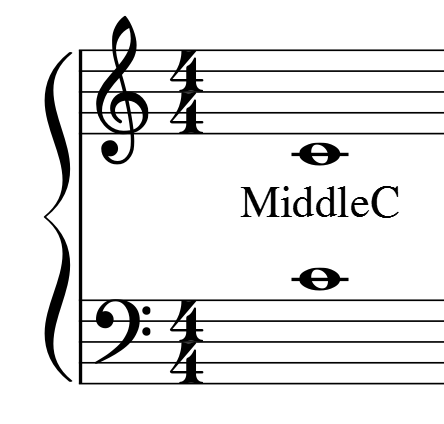

Welcome to the Staff Lesson!
Use the previous and next buttons to traverse through the lesson.
Click the interactive buttons in the lesson text to enhance your learning.
Now that we know how the piano works, it's time to tackle the staff!
A staff is comprised of five lines. Both the lines and their spaces are significant.
A note is either placed ON the line, or IN a space.
These note placements correspond with the white keys of the keyboard.

This is a TREBLE CLEF. it assigns a set of notes to the lines and spaces on the clefs.

In the Treble clef, the bottom line corresponds to the E note.
The space directly above it corresponds to the F note.
The space directly below it corresponds to the D note.

When there is no more room, a LEDGER LINE is added as an extension to the staff, where the C is placed.
A helpful mnemonic device to learn the notes as they appear on the lines in the Treble clef is:
Fine (top line)
Does
Boy
Good
Every (bottom line)
And for the spaces, the trick is simply:
E (top space)
C
A
F (bottom space)

The other clef we will be using is the BASS CLEF.
This clef represents a different set of notes lower in pitch than in the Treble clef.
The bottom line corresponds to the G note.
The line above it corresponds to the A note, etc. etc.
A helpful mnemonic device to memorize the notes as they appear on the lines in the Bass clef is:

Always (top line)
Fine
Do
Boys
Good (bottom line)
“All Cows Eat Grass” for the spaces:

Grass (top space)
Eat
Cows
All (bottom space)
When a note is placed on the first ledger line above the Bass clef, it is a C note at the same pitch as the C note demonstrated on the Treble clef.
This is known as middle C.

In what is called the GRAND STAFF, these clefs are placed with the Treble on top and the Bass below.
They are joined by the middle C note.
Now that we've finished the lesson, go check out the quiz!